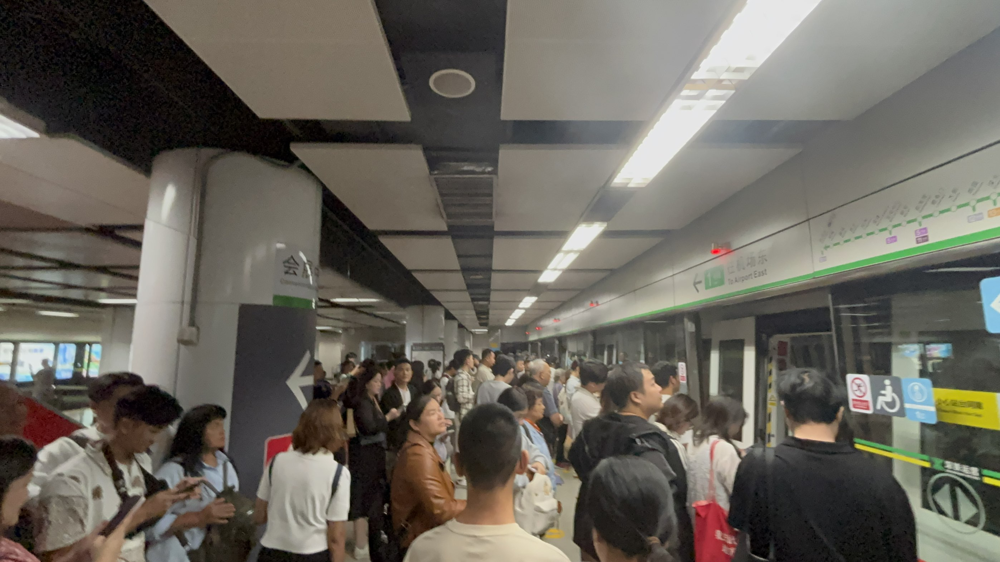
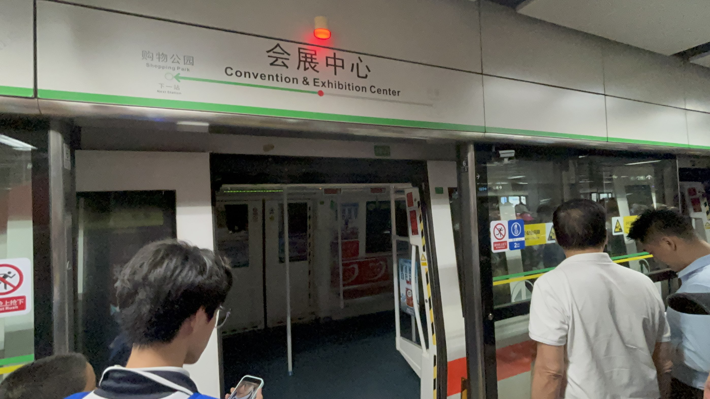
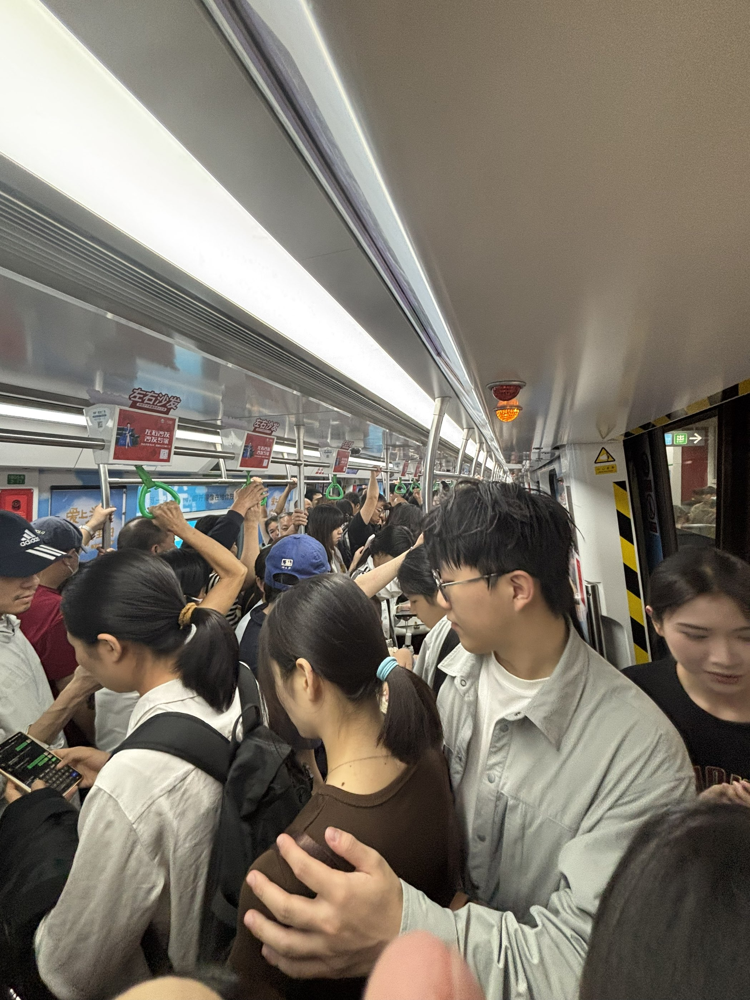
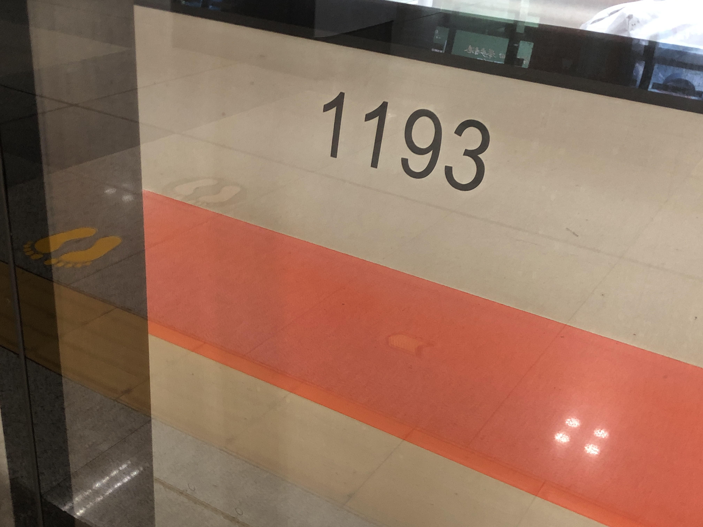

2026 年 11 月 14 日 13:23，1 号线一列开往机场东方向的列车，在会展中心站停住之后，灯全灭了。
车号 111。按本站的车型记录，它属于 01A2206庞，号段 101–122，庞巴迪制造。
接下来发生的事很短：车辆机破，在会展中心站清客，空车返回竹子林；竹子林备车 106 随即顶上正线。而后续的代价是——180 车被挤爆了。
整件事没有官方通报。下面的内容来自现场目击者提供的照片与视频，以及车迷社群的转述——请当作记录，而不是结论。
一、那几分钟
先把已知的部分按顺序排一遍。
已知
- 13:23｜列车运行至会展中心站（机场东方向）时发生机破，即车辆故障退出运营。
- 熄灯｜车厢内部照明全灭——不是单节，是整列。
- 但走字屏还亮着｜视频里能看到，熄灯之后车厢顶部的 LED 走字屏仍在滚动黄色文字。这一点很重要，后面会展开。
- 清客｜列车在会展中心站终止载客，站台迅速积压。
- 回库｜清客后空车返回竹子林。
- 顶替｜竹子林备车 106 投入正线。
- 连带｜后续 180 车客流爆满——目击者当时就在 180 车上，并拍下了车厢内的画面；据其描述，180 在车公庙—竹子林区间还临时停车了一次。
- 存量背景｜同号段里未翻新的原装车只剩 108、110、111 三辆，而 108、110 已经进厂——111 是最后几列之一（车迷社群口径）。
一条前兆，和它引起的疑问
有目击者提到，事发前就已经看到「一串走字屏坏了的」。这句话来自转述，没有更多细节。
但它和上面「熄灯后走字屏仍在工作」这条观察，指向的并不是同一件事：如果走字屏当时还能正常显示，那坏掉的就应该是另一列（或另一批）车的屏。这两条信息可能互不相干，也可能同属一个更大的系统性问题。目前无法判断，所以这里只做并列记录，不下结论。
未知
- 熄灯是机破的原因还是后果——目前无法判断先后
- 「走字屏坏了」指的是哪一列车、哪一段时间
- 180 临时停车是否就是在等备车出库进正线（合理解释，但未证实）
- 111 后续是修复回归，还是直接进厂
二、现场
下面三张由现场目击者拍摄，未经压缩。



视频里还能看到什么
目击者另外提供了五段现场视频（总长约 9 分钟）。按拍摄者要求，视频不在这里发布，但画面内容可以说明几件事：
- 熄灯后的车厢｜一片暗，只有顶部的 LED 走字屏还亮着黄字在滚。车厢里仍有乘客，不是在空车状态下熄的灯。
- 车门打开后｜车外站台灯光明亮，车厢里是黑的，对比非常明显；站台一侧已经挤满了人。
- 会展中心站是换乘站｜视频里能拍到站台上「往牛湖」的 4 号线导向牌——这里是 1、4 号线换乘，一列车趴下，影响的不只是 1 号线的客流。
- 竹子林站台｜另一段视频在竹子林拍，画面里站台清空、只剩穿反光背心的站务人员在走动。
- 180 车车厢内｜还有一段竖屏视频是在 180 车上拍的（据拍摄者说明），人贴人，连转身都困难；拍摄者提到，这列车在车公庙到竹子林之间还临时停了一次车。
- 往机场东方向的后续列车｜另一段视频拍的是同方向后续车次的车厢内，顶部的动态线路图还亮着「往机场东」以及车公庙、竹子林等站序——说明积压的是这个方向的客流。
三、111 是谁
如果要给 1 号线找一批「元老」，那 101–122 这个号段就是了。它们随 1 号线开通而来，是这条线最早的一批电客车。
本站《已遇到车辆记录》里，1 号线一共记了四个车型：
- 01A2206庞｜101–122｜庞巴迪
- 01A0406長｜123–126｜长春轨道客车
- 01A2606株｜127–152｜株洲电力机车
- 01A3306株｜153–185｜株洲电力机车
111 就在第一行里。它和这次顶上来的 106，是同一批车。
这批车我拍到过四列：110、116、119、121。照片放在下面——不是 111 本人，是同一个号段的同型车。




四、未翻新的，只剩三辆
这里要说一件比「一列车趴窝」更值得记的事。
101–122 这批庞巴迪车，绝大多数已经翻新过了——现在正线上跑的多是「翻新庞巴迪」。真正保持原装、没有翻新的，只剩 108、110、111 三辆。
而这三辆里，108 和 110 已经拉去翻新了——顺序是先 108、再 110。111 这次机破之后，「估计也快了」。
换句话说：111 很可能就是 1 号线上最后一列还在跑的原装庞巴迪——而它今天趴下了。
注：以上存量信息来自车迷社群，非官方口径；「111 也快了」属推测，不是已发生的事实。
五、顶上来的 106，和挤爆的 180
备车能立刻顶上，说明车辆段里确实有可用的热备车。替补上来的 106 也属于 101–122 号段——但按前面说的存量，它必然是一列已经翻新过的庞巴迪。
所以这次换车，换掉的不只是运力：一列未翻新的原装车退了，顶上来的是同号段的翻新车。如果 111 也就此进厂，那 1 号线正线上还在跑的「原装」就真的清零了——当然，这一步还只是推测。
当天在线上按车序盯车的车迷，还记下了另一件更麻烦的事：111 退出之后，原本排在它后面的车次对不上了。
按原有车序，111 后面应该是 180——但实际接上来的是 138；而本该出现在 180 之后的 127，也不见了，位置由 173 顶替。180 本身仍在正常运营，并没有被拉去补位。
127 为什么会消失，目前没有任何解释，只有车迷群里一句「退出运营？」和一句「应该是」。如果属实，那这一天退出正线的，可能就不止 111 一列。
注：车序信息来自车迷当天的现场记录与推测，运营方未作任何说明。
真正被换掉的，是运力。一列车退出 → 后续车次全部承压 → 180 挤爆。这是一条很直接的因果链，视频里那段人贴人的车厢，就是这个后果的直观样子。
180 在车公庙—竹子林区间临时停车这件事，比较自然的解释是给它前面的备车让路——竹子林的车要出库进正线，得占用区间。但这只是推测，没有运转记录可以证实。
顺带一个细节：当天 15:58 前后，有车迷专程跑到桃园站，想看 106 什么时候会出现——为了看一眼这列刚顶上来的车，值得专门去守一次。
六、这次失灯意味着什么
先说清楚：以下全是推测，没有任何官方说明。
「机破」是运营上的说法，指的是车辆故障导致退出服务；但它不指明故障点在哪。全车照明失灯这个表象，在电客车上大致有几种方向：
- 照明供电回路——某一路熔断器、接触器或线路故障，正好覆盖全列照明，就会出现「整车一起黑」。
- 辅助供电系统——照明、空调和部分控制电源都靠辅助逆变器与蓄电池供给，这一路掉电，整车照明会一起暗下去。
- 列车控制保护动作——检测到异常时主动切除部分负载，严重时直接施加制动。
而这一次，视频里那条「灯灭了、走字屏还亮着」的细节，其实把范围缩小了一点：
车内 LED 走字屏和车厢照明，通常走的是两套不同的供电支路。走字屏还能正常滚动，说明列车的主控制与低压供电并没有整体崩溃——更像是其中一路（照明）被切断或失效。所以第一种「照明供电回路」的解释，在这个画面证据下会更站得住。
当然，这依旧只是从画面倒推的猜测。真正的结论要等车载数据，而那部分外界看不到。
更值得注意的是时间点：一列服役二十余年的老车，在正线上出现整车级故障，通常会被纳入「是否继续投入运营」的评估。而这件事的重点在于——翻新并不是未来的选项，它已经在发生了：同号段的 108、110 已经进厂，111 这一次，大概率只是排队排到了它。
当然，翻新与退役是两条不同的路。翻新意味着这批车还要继续跑；退役才是真正的告别。111 会走哪一条，现在谁也说不准。
七、最后
我对这批车的印象，其实来自更早的东西：车里那块老式动态闪灯图、老街站那片旧站台，还有那些年久但每晚依然亮着的灯带。
车会老，这是迟早的事。只是没想到它退场的方式，会是一整车的灯突然灭掉，只剩头顶那块走字屏还在滚；然后一车人被请下车，挤在站台上等下一班，下一班又挤爆。
希望 111 只是歇一歇。
图片来源（一）：图文8-5 ~ 图文8-7 由现场目击者拍摄并提供，地点为会展中心站站台及后续列车车厢内，原图未作压缩。
图片来源（二）：图文8-1 ~ 图文8-4 为本人在不同时间拍摄的 1 号线原装庞巴迪同型车（110、116、119、121），并非 111 车本人。
视频素材：目击者另提供五段现场视频（合计约 9 分钟）。按拍摄者要求，视频不在本站发布，本文仅引用其画面内容。
车辆号段信息引自本站《已遇到车辆记录》。事件时间、地点与处置过程来自目击者与车迷社群转述，无官方通报；「走字屏前兆」「180 临时停车原因」「失灯成因」等均为转述或推测，已在文中标注。
记录时间：2026年11月14日 · 首发于：走进新天地·Railway